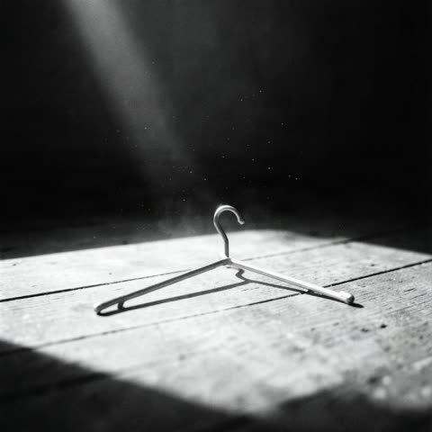

Vizcaya Sound · 2026-09-12
See you later
Lyrics
Left my keys where they always go
Right beside your half-used jar of honey
I almost asked what you wanted from the store
Forgot for a second you're not in the other room anymore
It's the dumb routines that break you down
Putting out two mugs, catching the sound
Of footsteps that turn out to be the floor settling in the hall
Found an old card buried in a drawer
Your crooked handwriting across the fold
You used to joke before you hung up the phone
Whispering soft like a secret only we both know
I love you first you'd say, every single time
And I'd laugh it off, quick on the line
I love you more
Now I'm learning the quiet is louder than grief
It isn't a storm
it's a slow burning freeze
No miracle coming, no footsteps outside
Just an empty coat hanger and an afternoon light
You're not coming back to fix what I broke
Or talk me through things when I can't clear my throat
I won't call it goodbye
I don't have the nerve
It's just see you later in another life
Something good happened at work today
Pulled out my phone before I caught myself
My thumb hovered over your contact name
Seven digits still saved on a screen
Like if I waited long enough the tone would ring
The world just keeps moving, indifferent and fast
While I'm stuck negotiating with the past
Learning the quiet is louder than grief
It isn't a storm it's a slow burning freeze
No miracle coming, no footsteps outside
Just an empty coat hanger and an afternoon light
You're not coming back to fix what I broke
Or talk me through things when I can't clear my throat.
I won't call it goodbye
I don't have the nerve
It's just see you later in another life
People say time will soften the edge
Like absence is something you eventually mend
I don't want the edges soft if it means losing your voice
I'd rather carry the scrape and the weight of the noise
You had me at the start
you watched my first breath
Now I have to carry the rest
You told me I love you first
And God knows I meant it with I love you more
You're not coming back through that front door
No matter how long I sit on the floor
So I'll live out the days that you didn't get
Carry your laugh through the quiet and sweat
It's not a goodbye
It's just see you later in another life
Just see you later
In another room
In another life
I love you more